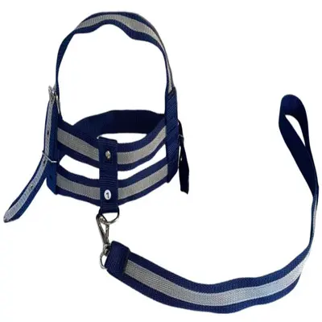

Coleira Ajustável com Guia
Detalhes do Produto
- Marca
- WalkSafe
- Material
- Nylon reforçado
- Indicação
- Cães de pequeno a grande porte
- Tamanhos Disponíveis
- P, M, G, GG
- Características
-
- Guia de 1,5 metros
- Fecho de segurança reforçado
- Ajuste rápido
- Resistente e durável
- Diversas cores disponíveis
- Comprimento da Guia
- 1,5 metros
- Preço
- R$ 45,90
Descrição
Coleira ajustável fabricada em nylon de alta resistência, ideal para passeios seguros e confortáveis. Acompanha guia de 1,5m com mosquetão giratório que evita enroscos. Perfeita para o dia a dia do seu cão.